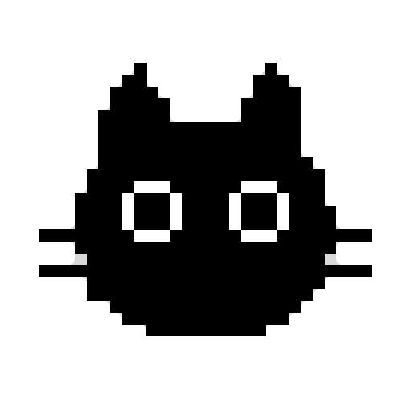

Фокус без жёсткости
Помодоро и понятный ритм работы, когда нужно спокойно дойти до конца задачи.

CatCode TelegramCATCODE FOR WINDOWS
Живёт рядом на рабочем столе, напоминает о важном и делает перерывы чуть человечнее.
300 ₽ · бессрочная лицензия · 1 устройство
Листай вниз
ПОПРОБУЙ ПРЯМО СЕЙЧАС
ЖИВАЯ РЕАКЦИЯ
Наведи курсор на кота или погладь его. Он мурчит, спит, работает и умеет напоминать о себе.
В приложении состояния меняются в зависимости от твоего ритма: бездействие усыпляет, быстрая печать оживляет.
АГЕНТЫ ПИШУТ КОД. КОТ В КУРСЕ.
CatCode отслеживает локальные события Codex, Cursor и Claude Code. Когда агент завершает задачу, кот показывает уведомление и запускает анимацию завершения.
Задача: обновить интерфейс
Проверяю измененияЗапускаю проверкуГотовоОжидает завершения
События обрабатываются локально на Windows: CatCode не отправляет содержимое твоих задач на сайт.
НЕ ОТВЛЕКАЕТ. ПОДДЕРЖИВАЕТ.
Помодоро и понятный ритм работы, когда нужно спокойно дойти до конца задачи.
Вода, разминка и отдых появляются вовремя, а не когда уже всё затекло.
Закреплённые фразы и тихие сигналы остаются рядом, пока ты занят.
ТВОЙ ОКРАС. ТВОЙ ХАРАКТЕР.
В CatCode уже есть шаблон и готовый промпт. Нейросеть получает фото, сохраняет цвета и отметины, а готовый JSON импортируется в приложение.
Серый окрас, тёмные полосы и цвет глаз с фотографии переносятся в скин.
ПОЛУЧИТЬ CATCODE
Напиши в Telegram. Я пришлю установщик после оплаты и личный ключ для активации.
Написать @catcodeappЗадаёшь вопрос или сразу говоришь, что хочешь CatCode.
После оплаты получаешь установщик для Windows и персональный ключ.
Вводишь ключ при первом запуске. Лицензия бессрочная и привязывается к одному устройству.
КОРОТКО О ВАЖНОМ
На Windows 10 и Windows 11, 64-битная версия.
Кот продолжает работать офлайн. Интернет нужен только для редкой проверки лицензии.
Да. Напиши в Telegram, и устройство можно отвязать без потери лицензии.